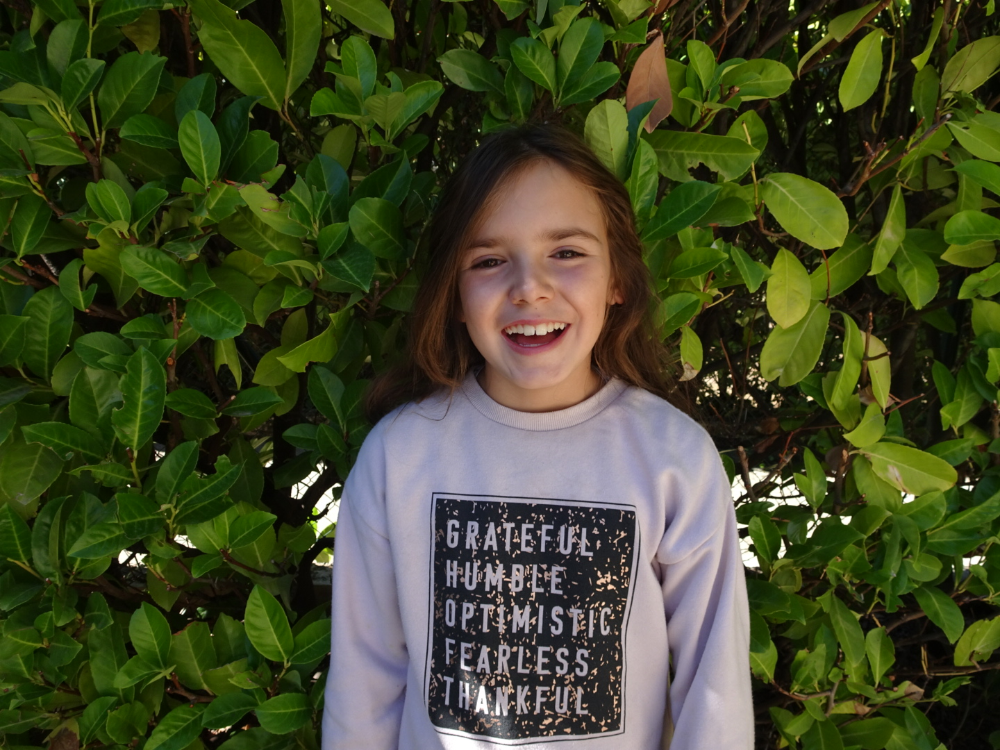
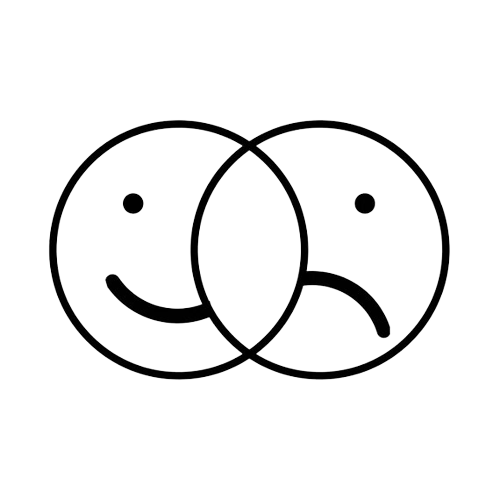
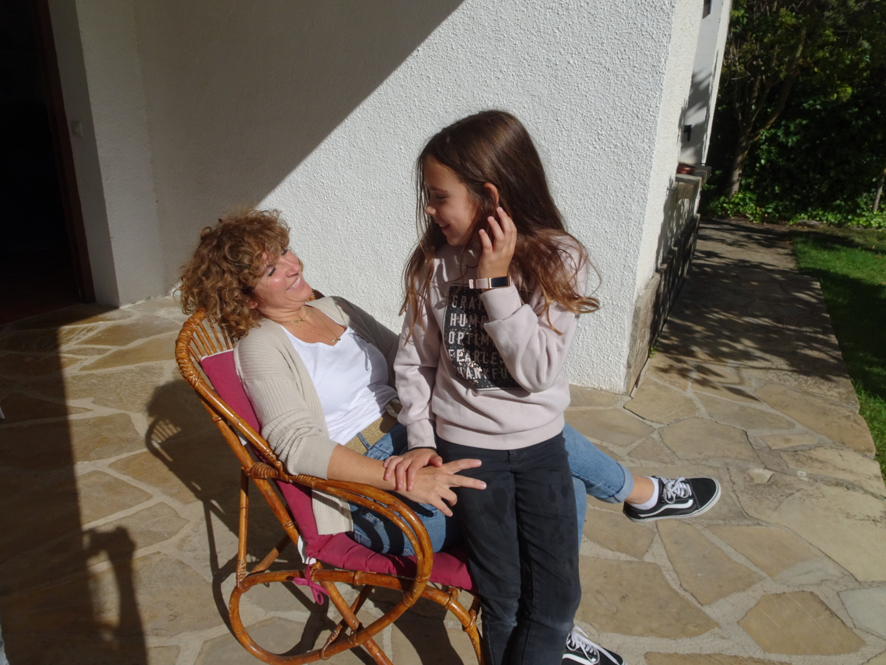
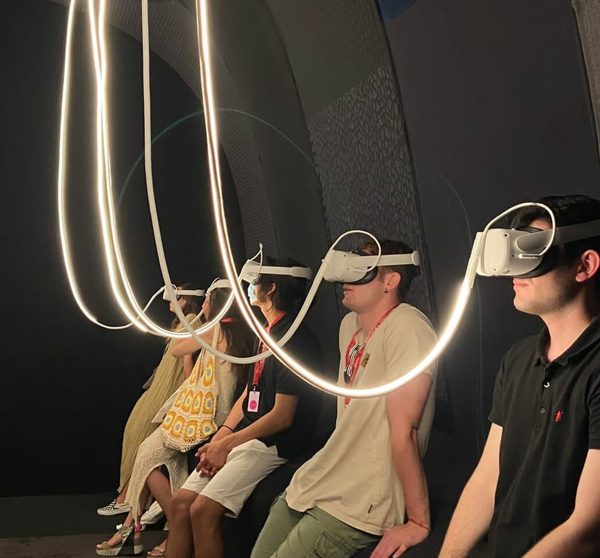

¿NOS HACE FELICES LA TECNOLOGÍA?

La Felicidad
¿Cuántas veces te han preguntado si eres feliz? ¿Lo has considerado? Según la RAE, la felicidad se define como un “estado de grata satisfacción espiritual y física”. Sólo la mitad de las personas en España se consideran felices… Y este número ha ido disminuyendo con los años.
¿Hasta qué punto ha tenido influencia la tecnología en este descenso? Vivimos en un mundo de rapidez, donde todo hay que resolverlo ya; de una vida digitalizada, hiperconectada, hipercomunicada.
Revolución Tecnológica
La tecnología es parte de nuestro día a día. Desde que nos despertamos y miramos el móvil, escuchamos música en el autobús, accedemos a la universidad con una tarjeta, trabajamos en los ordenadores hasta que vemos una película antes de ir a dormir. La tecnología es realmente imprescindible para todos nosotros, de hecho, la persona promedio dura aproximadamente 7 horas al día utilizando la tecnología, ¡casi un 30% del día sin contar el tiempo que se está durmiendo!
El desarrollo de la tecnología ha sido exponencial, cada vez mejor y más asequible. En la década de los 80 apenas un 8,2% de la población tenía acceso a un ordenador por familia, un número que hoy en día ronda el 81,4% por persona.
Esta diferencia es aún mayor en los teléfonos móviles. Hoy en día, un 92% de la población mundial tiene un móvil y de media lo revisa 96 veces al día. Esto se acentúa en los jóvenes, dado que el 50% se considera adicto al móvil.
La tecnología, siempre ahí, ¿nos ayuda a ser felices? ¿Merece la pena todo el tiempo que invertimos en ella?
Ventajas
La tecnología nos ha traído muchas cosas buenas. Hace 50 años, nadie se hubiera imaginado que pudiera ver y hablar con otra persona del otro lado del planeta con tan solo un click. De hecho, el 67% de los usuarios dice que esta comunicación online ha contribuido a reforzar y mantener sus amistades y relaciones. También ha permitido hacer acciones de nuestra vida cotidiana más fáciles y de forma más cómoda. Somos capaces de comprar cualquier cosa sin salir de casa. Incluso tareas tan sencillas como subir las persianas se pueden automatizar con un asistente de voz.
Además de facilitarnos la vida, la tecnología también nos hace sentir más seguros. La implementación de cámaras, alarmas y otros sistemas de seguridad hace que nos encontremos más tranquilos en muchos lugares, incluyendo nuestras propias casas. El tema de la ciberseguridad está cada vez más presente, sobre todo en relación a transacciones que podemos hacer online. Obtener y revisar la información es más fácil ya que todos los documentos se encuentran al alcance de un click. Perder menos tiempo en labores simples y repetitivas logra un aumento de la productividad.
Claramente la tecnología ha hecho las vidas de personas con necesidades especiales mucho más dignas. Algo es que puedan tener un asistente personal que les ayude con sus actividades, sin embargo, es una maravilla que la tecnología les permita hacer las cosas por sí mismos. Les da libertad, y con esto, felicidad.

Las redes sociales también tienen efectos positivos que llevan a una vida más feliz:

Menor aislamiento social
Mayor apoyo en las relaciones sociales
Mayor confianza en otros

Forma de Aprendizaje
Inconvenientes
¿Cuántas veces hemos comprado algo sólo por poder? El mayor acceso y la facilidad para comprar bienes y servicios fomenta el creciente problema del consumismo, ya que se puede comprar prácticamente cualquier cosa de forma impulsiva, resultando en la compra de bienes que en realidad son innecesarios.
¿Alguna vez has leído los términos y condiciones? Es preocupante el tema de la privacidad. Damos nuestro consentimiento para utilizar nuestros datos al hacer uso de cualquier página web o aplicación, sin saber realmente a qué y a quién puede llegar esa información.
El uso de los móviles está relacionado con un incremento en las tasas de ansiedad y depresión. El sólo tener el móvil fuera de alcance causa mayor ritmo cardíaco, presión sanguínea y nivel de estrés. Además, aquellos que pasan más de cinco horas al día frente a pantallas tienden a ser dos veces más infelices que los que sólo pasan una.
Asimismo, hay que pensar en los efectos negativos de las redes sociales sobre la salud mental:

Bajan la autoestima
Producen incomformidad e insatisfacción en la vida
Causan envidia
Inducen a un sentimiento de soledad
Conclusiones
Como todo en la vida, nada es blanco y negro. Es importante buscar un balance que nos permita beneficiarnos de los aspectos positivos que nos brinda la tecnología, pero siempre en su cierta medida, de manera que no nos consuma.
Tres claves para usar la tecnología con consciencia:
Educación
Pilar de la Sociedad
Es necesario equipar a las generaciones futuras con los valores necesarios para utilizar herramientas cada vez más poderosas de forma responsable y ética.
Dosificación
Saber Administrar
La forma de lograr la felicidad con la tecnología no es renunciar por completo a la tecnología, sino utilizarla en la medida adecuada.
Independencia
Ser Libre
Buscar espacios y momentos en los que estemos alejados de la tecnología podría ayudarnos a conseguir no ser dependientes de ella.
Créditos
Esta página web ha sido realizada para la asignatura Visual Communication de Tecnun en el año 2022 por:
- Inés Anitua
- Jaime Báez
- Leyre Zaragüeta